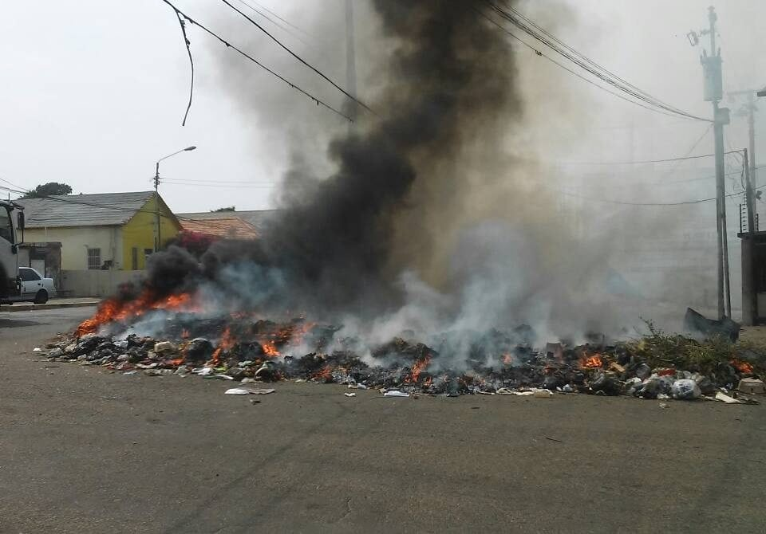

Realicemos una campaña
Las inundaciones ocurren debido a lluvias intensas, desbordamiento de ríos, deshielo de nieve, marejadas ciclónicas o ruptura de presas. Los incendios forestales pueden ser causados por rayos durante tormentas eléctricas o por actividades humanas como quemas descontroladas, negligencia en el manejo de fuego y quema de basura. La influencia humana, como la deforestación y la urbanización no planificada, aumenta la vulnerabilidad a estos fenómenos. Es importante tomar medidas de prevención y gestión adecuada de los recursos para reducir el riesgo y los impactos de las inundaciones y los incendios forestales.
Las inundaciones y los incendios generan pérdidas significativas, incluyendo la pérdida de vidas humanas, daños materiales en viviendas e infraestructuras, impacto económico negativo, pérdida de biodiversidad y la interrupción de servicios básicos como electricidad y agua potable. Estos eventos tienen consecuencias tanto para las personas como para el medio ambiente, y la magnitud de las pérdidas puede variar dependiendo de la intensidad y duración de los fenómenos.
Como seres humanos, tenemos la responsabilidad de tomar medidas preventivas y de mitigación para reducir el riesgo y el impacto de las inundaciones y los incendios. Esto implica estar informados sobre los riesgos, seguir las indicaciones de las autoridades en caso de alertas o evacuaciones, cuidar y preservar los recursos naturales, como bosques y cuencas hidrográficas, y promover prácticas sostenibles en nuestras actividades diarias. También es importante estar preparados para actuar de manera segura y solidaria durante estas situaciones, brindando apoyo a las personas afectadas y colaborando con los equipos de respuesta y recuperación. En última instancia, nuestra responsabilidad es contribuir a la construcción de comunidades más resilientes y sostenibles frente a estos desafíos naturales.

El medio ambiente es de vital importancia para nuestra existencia y bienestar. Proporciona recursos necesarios como aire limpio, agua potable y alimentos. También desempeña un papel crucial en la conservación de la biodiversidad y el equilibrio de los ecosistemas. Sin embargo, el uso irresponsable de los recursos puede agotarlos y degradarlos. Es fundamental adoptar prácticas sostenibles y promover la conservación para garantizar un futuro saludable y sostenible. La responsabilidad de proteger el medio ambiente recae en todos nosotros, trabajando juntos para lograr un equilibrio entre el desarrollo humano y la preservación de la naturaleza.
La quema de basura en nuestro barrio contribuye a la destrucción del medio ambiente. Esta práctica emite gases tóxicos, contamina el aire y el agua, y afecta a la flora y fauna local. Es necesario promover alternativas sostenibles en el manejo de residuos para preservar el medio ambiente y garantizar un entorno saludable para todos.
